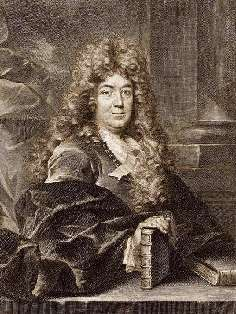
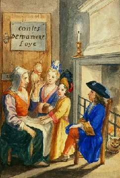

Борис Акунин
Мой календарь
Вчера мы с Шарлем Перро пугали вас Серым Волком, но это не главный урок, который нам преподает великий сказочник. Самое важное моралитэ - не его сочинения, а его жизнь. Про нее стоило бы написать особую сказку и назвать ее «Белая шапочка», потому что кульминация наступила, когда герой был уже сед (и к тому же носил напудренный парик).
Шарль Перро, родившийся в этот январский день в 1628 году, прожил свою жизнь припеваючи. С молодых лет пристроился при большом человеке, королевском фаворите Кольбере, и существовал на приятной, хорошо оплачиваемой должности аж до 67 лет. А потом фортуна переменилась, и старый гедонист остался на бобах, отставной козы барабанщиком, без средств к существованию, даже без пенсии. (При каких обстоятельствах это произошло - сейчас несущественно. «Кризис позднего возраста», с поправкой на эпоху, может обрушиться на любого и сегодня).
Вместо того чтобы захандрить, сказать себе «доживу как-нибудь, сколько мне осталось» или, скажем, спиться (между прочим тоже решение), мсье Перро стал сочинять фантазийные истории, и два года спустя выпустил «Сказки матушки Гусыни, или Истории и сказки былых времён с поучениями».
История про Белую Шапочку лучше, чем про Красную Шапочку. Во-первых, это сказка правдивая; во-вторых, она годится не только для девочек; да и учит вещи более важной: не тому, что надо бояться волка, а тому, что никогда не следует опускать руки.
Книжка сделала Шарля Перро богатым и знаменитым, очень скрасив последние годы его жизни. А заодно еще и подарила ему бессмертие.
Моралитэ сказки «Белая шапочка» такое: